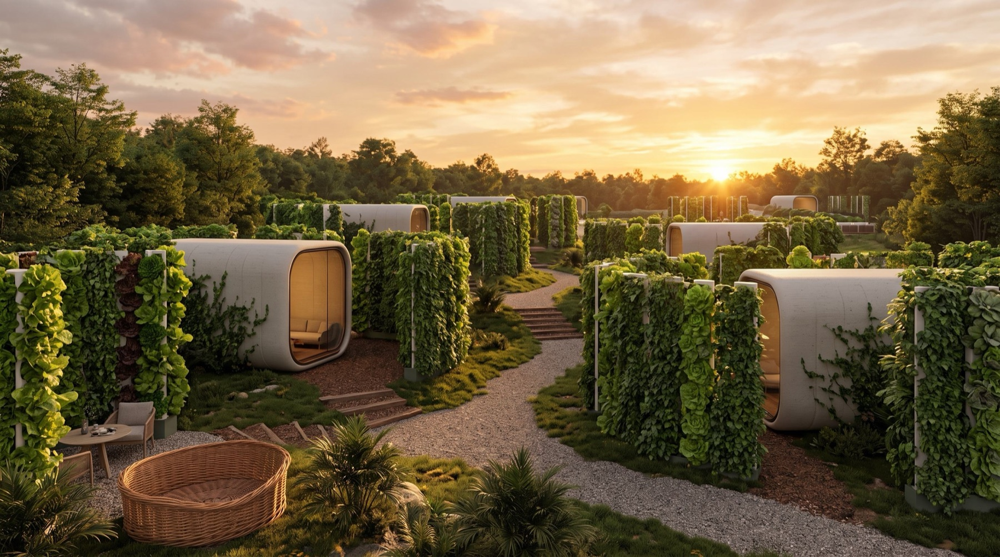
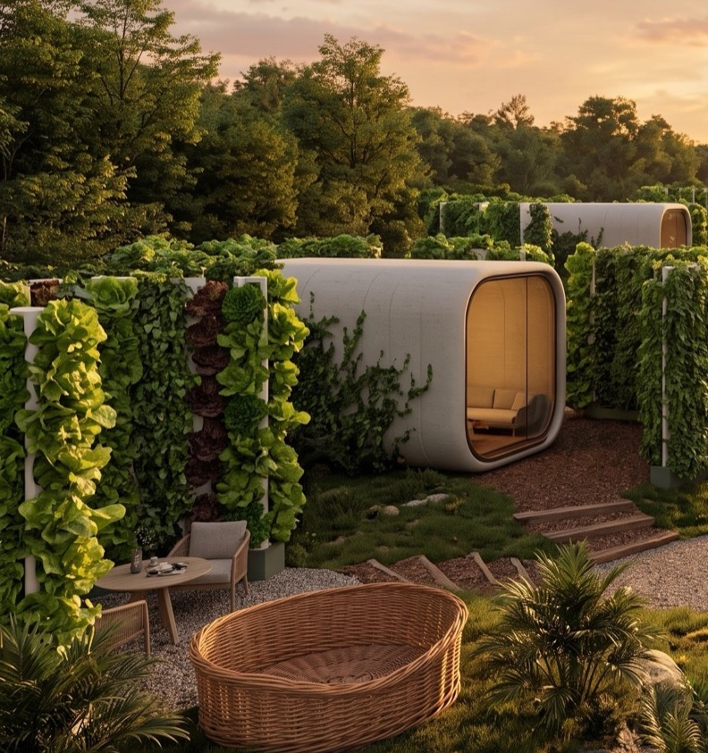
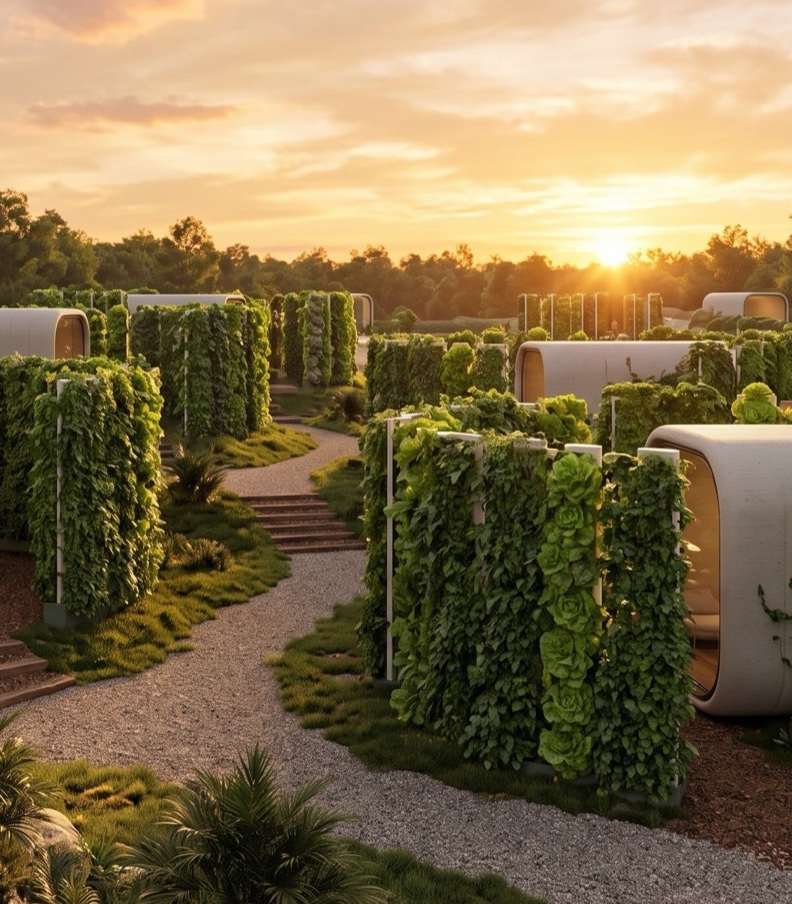

AgroBioTuscany
Агро-курортный комплекс

О проекте
Агро-фермерский курорт нового поколения, где высокие технологии и природа соединяются в единую среду обитания. Вертикальные фермы высотой 3–4 метра образуют зелёные аллеи, расставленные небольшими группами. Между ними — жилые капсулы в стиле бионика: современная архитектура, абстрактные формы, прозрачные объёмы, минимализм, вписанность в рельеф.
Задача
Разработать концепцию комплекса, который одновременно служит агро-инновационным центром, курортом для осознанного отдыха и местом для жизни в гармонии с природой и технологиями.
Главный вызов
Соединить производственную функцию вертикального фермерства с курортным сценарием так, чтобы техника не подавляла ландшафт, а жильё не читалось как объект посреди поля.
- 3–4 м
- высота вертикальных ферм
- 3
- функции в одной среде
Место


Результат
Комплекс работает сразу в трёх ролях: агро-инновационный центр (вертикальное фермерство, умные системы полива, контроль микроклимата), курорт для осознанного отдыха и место для жизни в гармонии с природой и технологиями.
Решение
Модульные дома не доминируют, а прячутся среди вертикальных огородов — капсулы утоплены в зелень, создавая ощущение лёгкости и единения с природой. Пространство между домами и фермами организовано экологическими тропами с гравийным покрытием. Архитектурный язык — современная абстракция, бионика, минимализм, свет, воздух, зелень.
Объём работ
- Концепция
- Типология
- Бионика
- Эко-интеграция
- Умные технологии